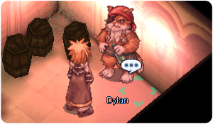

Honor Token
Honor Tokens are a form of currency that can be obtained through various quests from the Banquet for Heroes update.
Item Exchange
You can exchange  Honor Tokens with Commissary Arner for various consumables and equipment. He can be found near the prison area in the Prontera Castle, at .
Honor Tokens with Commissary Arner for various consumables and equipment. He can be found near the prison area in the Prontera Castle, at .
Consumables
| Consumable | Cost | Description |
|---|---|---|
 City Map City Map
|
1 Honor Token
|
A map used to guide someone through the city of Prontera, making it quicker to navigate. Casts Level 1 Increase AGI. |
 Shining Holy Water Shining Holy Water
|
3 Honor Token
|
A flask of holy water which shines ever so bright. Reduces damage taken from monsters in the Room of Consciousness and Prontera Invasion Dungeon by 10% for 3 minutes. Restores 1000 HP. |
| Prison Key | 3 Honor Token
|
Several old and dirty keys that are held together by a metal ring that instantly sends its user to the underground dungeon of Prontera when used. |
 Prontera Badge Prontera Badge
|
3 Honor Token
|
A badge where the coordinates for Prontera are saved that instantly sends its user to Prontera when activated. |
Armors
| Consumable | Cost | Type | Description |
|---|---|---|---|
 City Map [1] City Map [1]
|
150 Honor Token
|
Accessory | A map used to guide someone through the city of Prontera, making it quicker to navigate. Enables use of Level 3 Increase AGI. |
 Shining Holy Water [1] Shining Holy Water [1]
|
400 Honor Token
|
Accessory | A flask of holy water which shines ever so bright. Reduces damage taken from monsters in the Room of Consciousness and Prontera Invasion Dungeon by 20%
Restores 100 HP and 30 SP every 10 seconds. |
 Royal Guard Shield [1] Royal Guard Shield [1]
|
400 Honor Token
|
Shield | DEF: 30, Weight: 300 Every refine level, DEF +10, MDEF +1 Enables use of Level 1 Shield Spell When receiving melee attack, |
 Prontera Badge Prontera Badge
|
150 Honor Token
|
Accessory | A badge where the coordinates for Prontera are saved that instantly sends its user to Prontera when activated. 15 minutes cooldown. |
 Flattery Robe [1] Flattery Robe [1]
|
600 Honor Token
|
Armor | MATK +50. If user is level 120 of higher, additional MATK +50 If user is level 140 of higher, additional MATK +50 Enables use of Level 1 Endure. If worn with Ancient Cape, If worn with Survivor's Manteau, |
 Abusive Robe [1] Abusive Robe [1]
|
600 Honor Token
|
Armor | Enables use of Level 1 Improve Concentration. Every Refine, bypass 4% DEF of Demi-Human, Demon, and Undead race targets with Physical attacks. If worn with Morrigane's Manteau, If worn with Valkyrian Manteau, |
| Costume Time Decor | 1100 Honor Token
|
Mid | Costume. |
| Costume Black Hand of Fate | 550 Honor Token
|
Upper |
Enchantment
Dylan will enchant some armors in exchange of Honor Tokens. He can be found in the prison at .

Prontera Badge enchants
The Prontera Badge can be enchanted twice. Both enchants can be any stats varying from +1 to +2.
- Enchanting the Prontera Badge costs 5 Honor Tokens and has no chance to break.
- Resetting the enchantment costs 10 Honor Tokens and has a 20% chance of destroying the item.
Robe enchants
The Flattery Robe and the Abusive Robe can be enchanted twice as well. Both enchants can be any of the Nives listed below.
- Enchanting the Robes costs 20 Honor Tokens and has no chance to break.
- Resetting the enchantment costs 10 Honor Tokens and has no chance to break. You can only reset a fully enchanted robe.
| Name | Enchant |
|---|---|
| Powerful Nive (Strength) |  Powerful Nive Lv 1 Powerful Nive Lv 1
|
| Agile Nive (Agility) |  Agile Nive Lv 1 Agile Nive Lv 1
|
| Spellbound Nive (Intelligence) |  Spellbound Nive Lv 1 Spellbound Nive Lv 1
|
| Dextrous Nive (Dexterity) |  Dextrous Nive Lv 1 Dextrous Nive Lv 1
|
| Lucky Nive (Lucky) |  Lucky Nive Lv 1 Lucky Nive Lv 1
|
| Stamina Nive (Vitality) |  Stamina Nive Lv 1 Stamina Nive Lv 1
|


Box Exchange
You can exchange 30 Honor Tokens with the Logistics Manager to receive a  Mysterious Blue Box. He can be found near the prison area in the Prontera Castle, at .
Mysterious Blue Box. He can be found near the prison area in the Prontera Castle, at .
A Mysterious Blue Box gives you a random item from the list of items that Commissary Arner exchanges.